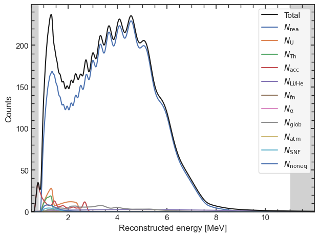

Create a model#
[1]:
import orsa
import numpy as np
import pandas as pd
import numpy as np
import matplotlib.pyplot as plt
import seaborn as sns
import matplotlib as mpl
sns.set(style = 'white')
mpl.rc('xtick.minor', visible = True)
mpl.rc('ytick.minor', visible = True)
mpl.rc('xtick', direction='in', top=True, bottom = True)
mpl.rc('ytick', direction='in', right=True, left = True)
print(orsa.__version__)
0.7.0
[2]:
model = orsa.model.Model([], np.arange(0.5, 12, 0.01), 0.8, 11, orsa.oscillation.default(), orsa.detector.default(), False, True, True, rebin = 1, exposure = 1)
model.add_parameter(orsa.model.DetectorParameter(label = 'eff', value = 1, error = 0.01, prior = {'positive': None}, formatted_label = r'$\epsilon$'))
model.add_parameter(orsa.model.DetectorParameter(label = 'a', value = 0.02614, error = 0.0077, prior = {'positive': None}, formatted_label = r'$a$'))
model.add_parameter(orsa.model.DetectorParameter(label = 'b', value = 0.006401, error = 0.012, prior = {'positive': None}, formatted_label = r'$b$'))
model.add_parameter(orsa.model.DetectorParameter(label = 'c', value = 0.01205, error = 0.033, prior = {'positive': None}, formatted_label = r'$c$'))
model.add_parameter(orsa.model.DetectorParameter(label = 'a0', value = 0, error = 1, is_relative=False, formatted_label = r'$a^{nl}_0$'))
model.add_parameter(orsa.model.DetectorParameter(label = 'a1', value = 0, error = 1, is_relative=False, formatted_label = r'$a^{nl}_1$'))
model.add_parameter(orsa.model.DetectorParameter(label = 'a2', value = 0, error = 1, is_relative=False, formatted_label = r'$a^{nl}_2$'))
model.add_parameter(orsa.model.DetectorParameter(label = 'a3', value = 0, error = 1, is_relative=False, formatted_label = r'$a^{nl}_3$'))
model.add_parameter(orsa.model.OscillationParameter(label = 'rho', value = 2.45, error = 0.06, prior = {'positive': None}, formatted_label = r'$\rho$'))
model.add_parameter(orsa.model.OscillationParameter(label = 'dm2_21', value = 7.53e-5, error = np.inf, formatted_label = r'$\Delta m^2_{21}$'))
model.add_parameter(orsa.model.OscillationParameter(label = 'dm2_31', value = 2.5283e-3, error = np.inf, formatted_label = r'$\Delta m^2_{31}$'))
model.add_parameter(orsa.model.OscillationParameter(label = 's2_12', value = 0.307, error = np.inf, formatted_label = r'$\sin^2 \theta_{12}$'))
model.add_parameter(orsa.model.OscillationParameter(label = 's2_13', value = 0.0218, error = np.inf, formatted_label = r'$\sin^2 \theta_{13}$'))
shape_fact = np.sqrt(36e-03/model.bin)
shape_fact_20 = np.sqrt(20e-03/model.bin)
gen_dict = dict()
gen_dict['rea'] = orsa.generator.sniper('reactors', True, shape_uncertainty='tao')
gen_dict['U'] = orsa.generator.geoneutrinos('238U', True, True, shape_uncertainty=0.05)
gen_dict['Th'] = orsa.generator.geoneutrinos('232Th', True, True, shape_uncertainty=0.05)
gen_dict['geo'] = orsa.generator.spe2gen(0.9*orsa.generator.geoneutrinos('238U', True, True).get_spectrum(model.E_eval) + 0.3*orsa.generator.geoneutrinos('232Th', True, True).get_spectrum(model.E_eval), shape_uncertainty=0.05)
gen_dict['lihe'] = orsa.generator.sniper('lihe', True, shape_uncertainty=0.1)
gen_dict['acc'] = orsa.generator.sniper('accidentals', True, shape_uncertainty=0)
gen_dict['fn'] = orsa.generator.common_inputs('FnBkgHistogramAD', orsa.spectrum.ReconstructedSpectrum, True, shape_uncertainty=0.2)
gen_dict['alpha'] = orsa.generator.common_inputs('AlphaNBkgHistogramAD', orsa.spectrum.ReconstructedSpectrum, True, shape_uncertainty=0.5)
gen_dict['glob'] = orsa.generator.common_inputs('OtherReactorSpectrum_L300km', orsa.spectrum.ReconstructedSpectrum, True, shape_uncertainty=0.05)
gen_dict['atm'] = orsa.generator.common_inputs('AtmosphericNeutrinoModelGENIE2', orsa.spectrum.ReconstructedSpectrum, True, shape_uncertainty=0.5)
gen_dict['snf'] = orsa.generator.common_inputs('SNF_VisibleSpectrum', orsa.spectrum.UnoscillatedSpectrum, True, shape_uncertainty=0)
gen_dict['noneq'] = orsa.generator.common_inputs('NonEq_VisibleSpectrum', orsa.spectrum.UnoscillatedSpectrum, True, shape_uncertainty=0)
model.add_parameter(orsa.model.CoreParameter(label = 'YJ-C1', value = 1, error = 0.008, formatted_label = r'$R_\mathrm{YJ-C1}$', baseline = 52.74, power = 2.9))
model.add_parameter(orsa.model.CoreParameter(label = 'YJ-C2', value = 1, error = 0.008, formatted_label = r'$R_\mathrm{YJ-C2}$', baseline = 52.82, power = 2.9))
model.add_parameter(orsa.model.CoreParameter(label = 'YJ-C3', value = 1, error = 0.008, formatted_label = r'$R_\mathrm{YJ-C3}$', baseline = 52.41, power = 2.9))
model.add_parameter(orsa.model.CoreParameter(label = 'YJ-C4', value = 1, error = 0.008, formatted_label = r'$R_\mathrm{YJ-C4}$', baseline = 52.49, power = 2.9))
model.add_parameter(orsa.model.CoreParameter(label = 'YJ-C5', value = 1, error = 0.008, formatted_label = r'$R_\mathrm{YJ-C5}$', baseline = 52.11, power = 2.9))
model.add_parameter(orsa.model.CoreParameter(label = 'YJ-C6', value = 1, error = 0.008, formatted_label = r'$R_\mathrm{YJ-C6}$', baseline = 52.19, power = 2.9))
model.add_parameter(orsa.model.CoreParameter(label = 'TS-C1', value = 1, error = 0.008, formatted_label = r'$R_\mathrm{TS-C1}$', baseline = 52.77, power = 4.6))
model.add_parameter(orsa.model.CoreParameter(label = 'TS-C2', value = 1, error = 0.008, formatted_label = r'$R_\mathrm{TS-C2}$', baseline = 52.64, power = 4.6))
model.add_parameter(orsa.model.CoreParameter(label = 'DYB-C', value = 1, error = 0.008, formatted_label = r'$R_\mathrm{DYB-C}$', baseline = 215.00, power = 17.4))
model.add_parameter(orsa.model.NormalizationParameter(label = 'rea', value = 47.1, generator = gen_dict['rea'], error = 0.02, is_oscillated=True, has_duty=True, formatted_label = r'$N_\mathrm{rea}$'))
model.add_parameter(orsa.model.NormalizationParameter(label = 'U', value = 0.9, generator = gen_dict['U'], error = np.inf, formatted_label = r'$N_\mathrm{U}$'))
model.add_parameter(orsa.model.NormalizationParameter(label = 'Th', value = 0.3, generator = gen_dict['Th'], error = np.inf, formatted_label = r'$N_\mathrm{Th}$'))
model.add_parameter(orsa.model.NormalizationParameter(label = 'acc', value = 0.8, generator = gen_dict['acc'], error = 0.01, formatted_label = r'$N_\mathrm{acc}$'))
model.add_parameter(orsa.model.NormalizationParameter(label = 'lihe', value = 0.8, generator = gen_dict['lihe'], error = 0.2, formatted_label = r'$N_\mathrm{Li/He}$'))
model.add_parameter(orsa.model.NormalizationParameter(label = 'fn', value = 0.1, generator = gen_dict['fn'], error = 1., formatted_label = r'$N_\mathrm{fn}$'))
model.add_parameter(orsa.model.NormalizationParameter(label = 'alpha', value = 0.05, generator = gen_dict['alpha'], error = 0.5, formatted_label = r'$N_\mathrm{\alpha}$'))
model.add_parameter(orsa.model.NormalizationParameter(label = 'glob', value = 1.0, generator = gen_dict['glob'], error = 0.02, formatted_label = r'$N_\mathrm{glob}$'))
model.add_parameter(orsa.model.NormalizationParameter(label = 'atm', value = 0.16, generator = gen_dict['atm'], error = 0.5, formatted_label = r'$N_\mathrm{atm}$'))
model.add_parameter(orsa.model.NormalizationParameter(label = 'snf', value = 0.14, generator = gen_dict['snf'], error = 0.3, is_oscillated=True, has_duty=False, formatted_label = r'$N_\mathrm{SNF}$'))
model.add_parameter(orsa.model.NormalizationParameter(label = 'noneq', value = 0.28, generator = gen_dict['noneq'], error = 0.3, is_oscillated=True, has_duty=True, formatted_label = r'$N_\mathrm{noneq}$'))
model.exposure = 6*365.25
[3]:
model # use model.to_json(filename) to store it to file

[3]:
<orsa.model.model.Model at 0x7f0ac83f2ad0>
[4]:
model.to_dict()
[4]:
{'E_eval': {'E_min': 0.5, 'E_max': 12.0, 'E_bin': 0.01},
'E_fit_max': 11,
'E_fit_min': 0.8,
'detector': {'resolution': {'a': 0.02614, 'b': 0.006401, 'c': 0.01205},
'non_linearity': {'model': 'common_input',
'anchor': 3.5185,
'p0': 0.967334113649631,
'p1': 0.06685436244184337,
'p2': 0.5093332269010721,
'p3': -0.13176400316242642,
'a0': 0.0,
'a1': 0.0,
'a2': 0.0,
'a3': 0.0,
'kB1': 4.5274222054926785,
'kB2': 0.0017343904821671902},
'cross_section': {'which': 'sv', 'recoil': True, 'smearing': False},
'efficiency': 1.0},
'duty_cycle': 0.9166666666666666,
'exposure': 2191.5,
'oscillation': {'oscillationParams': {'ordering': 'NO',
's2_12': 0.307,
'dm2_21': 7.53e-05,
's2_13_N': 0.0218,
'dm2_31_N': 0.0025283,
's2_13_I': 0.0224,
'dm2_32_I': -0.002512,
'source': 'NuFIT 2022'},
'matter_effect': {'matter_density': 2.45,
'abs_sigma': 0.15,
'rel_sigma': 0.06},
'baseline': 52.5},
'rebin': 1,
'split_cores': True,
'use_gpu': False,
'use_shape_uncertainty': True,
'parameters': {'eff': {'type': 'DetectorParameter',
'error': 0.01,
'fixed': False,
'formatted_label': '$\\epsilon$',
'label': 'eff',
'prior': {'positive': None, 'gauss': {'mean': 1, 'sigma': 0.01}},
'value': 1,
'is_relative': False},
'a': {'type': 'DetectorParameter',
'error': 0.00020127800000000002,
'fixed': False,
'formatted_label': '$a$',
'label': 'a',
'prior': {'positive': None,
'gauss': {'mean': 0.02614, 'sigma': 0.00020127800000000002}},
'value': 0.02614,
'is_relative': False},
'b': {'type': 'DetectorParameter',
'error': 7.6812e-05,
'fixed': False,
'formatted_label': '$b$',
'label': 'b',
'prior': {'positive': None,
'gauss': {'mean': 0.006401, 'sigma': 7.6812e-05}},
'value': 0.006401,
'is_relative': False},
'c': {'type': 'DetectorParameter',
'error': 0.00039765000000000004,
'fixed': False,
'formatted_label': '$c$',
'label': 'c',
'prior': {'positive': None,
'gauss': {'mean': 0.01205, 'sigma': 0.00039765000000000004}},
'value': 0.01205,
'is_relative': False},
'a0': {'type': 'DetectorParameter',
'error': 1,
'fixed': False,
'formatted_label': '$a^{nl}_0$',
'label': 'a0',
'prior': {'gauss': {'mean': 0, 'sigma': 1}},
'value': 0,
'is_relative': False},
'a1': {'type': 'DetectorParameter',
'error': 1,
'fixed': False,
'formatted_label': '$a^{nl}_1$',
'label': 'a1',
'prior': {'gauss': {'mean': 0, 'sigma': 1}},
'value': 0,
'is_relative': False},
'a2': {'type': 'DetectorParameter',
'error': 1,
'fixed': False,
'formatted_label': '$a^{nl}_2$',
'label': 'a2',
'prior': {'gauss': {'mean': 0, 'sigma': 1}},
'value': 0,
'is_relative': False},
'a3': {'type': 'DetectorParameter',
'error': 1,
'fixed': False,
'formatted_label': '$a^{nl}_3$',
'label': 'a3',
'prior': {'gauss': {'mean': 0, 'sigma': 1}},
'value': 0,
'is_relative': False},
'rho': {'type': 'OscillationParameter',
'error': 0.147,
'fixed': False,
'formatted_label': '$\\rho$',
'label': 'rho',
'prior': {'positive': None, 'gauss': {'mean': 2.45, 'sigma': 0.147}},
'value': 2.45,
'is_relative': False},
'dm2_21': {'type': 'OscillationParameter',
'error': inf,
'fixed': False,
'formatted_label': '$\\Delta m^2_{21}$',
'label': 'dm2_21',
'prior': {},
'value': 7.53e-05,
'is_relative': False},
'dm2_31': {'type': 'OscillationParameter',
'error': inf,
'fixed': False,
'formatted_label': '$\\Delta m^2_{31}$',
'label': 'dm2_31',
'prior': {},
'value': 0.0025283,
'is_relative': False},
's2_12': {'type': 'OscillationParameter',
'error': inf,
'fixed': False,
'formatted_label': '$\\sin^2 \\theta_{12}$',
'label': 's2_12',
'prior': {},
'value': 0.307,
'is_relative': False},
's2_13': {'type': 'OscillationParameter',
'error': inf,
'fixed': False,
'formatted_label': '$\\sin^2 \\theta_{13}$',
'label': 's2_13',
'prior': {},
'value': 0.0218,
'is_relative': False},
'YJ-C1': {'type': 'CoreParameter',
'baseline': 52.74,
'error': 0.008,
'fixed': False,
'formatted_label': '$R_\\mathrm{YJ-C1}$',
'label': 'YJ-C1',
'power': 2.9,
'prior': {'gauss': {'mean': 1, 'sigma': 0.008}, 'positive': None},
'value': 1,
'is_relative': False},
'YJ-C2': {'type': 'CoreParameter',
'baseline': 52.82,
'error': 0.008,
'fixed': False,
'formatted_label': '$R_\\mathrm{YJ-C2}$',
'label': 'YJ-C2',
'power': 2.9,
'prior': {'gauss': {'mean': 1, 'sigma': 0.008}, 'positive': None},
'value': 1,
'is_relative': False},
'YJ-C3': {'type': 'CoreParameter',
'baseline': 52.41,
'error': 0.008,
'fixed': False,
'formatted_label': '$R_\\mathrm{YJ-C3}$',
'label': 'YJ-C3',
'power': 2.9,
'prior': {'gauss': {'mean': 1, 'sigma': 0.008}, 'positive': None},
'value': 1,
'is_relative': False},
'YJ-C4': {'type': 'CoreParameter',
'baseline': 52.49,
'error': 0.008,
'fixed': False,
'formatted_label': '$R_\\mathrm{YJ-C4}$',
'label': 'YJ-C4',
'power': 2.9,
'prior': {'gauss': {'mean': 1, 'sigma': 0.008}, 'positive': None},
'value': 1,
'is_relative': False},
'YJ-C5': {'type': 'CoreParameter',
'baseline': 52.11,
'error': 0.008,
'fixed': False,
'formatted_label': '$R_\\mathrm{YJ-C5}$',
'label': 'YJ-C5',
'power': 2.9,
'prior': {'gauss': {'mean': 1, 'sigma': 0.008}, 'positive': None},
'value': 1,
'is_relative': False},
'YJ-C6': {'type': 'CoreParameter',
'baseline': 52.19,
'error': 0.008,
'fixed': False,
'formatted_label': '$R_\\mathrm{YJ-C6}$',
'label': 'YJ-C6',
'power': 2.9,
'prior': {'gauss': {'mean': 1, 'sigma': 0.008}, 'positive': None},
'value': 1,
'is_relative': False},
'TS-C1': {'type': 'CoreParameter',
'baseline': 52.77,
'error': 0.008,
'fixed': False,
'formatted_label': '$R_\\mathrm{TS-C1}$',
'label': 'TS-C1',
'power': 4.6,
'prior': {'gauss': {'mean': 1, 'sigma': 0.008}, 'positive': None},
'value': 1,
'is_relative': False},
'TS-C2': {'type': 'CoreParameter',
'baseline': 52.64,
'error': 0.008,
'fixed': False,
'formatted_label': '$R_\\mathrm{TS-C2}$',
'label': 'TS-C2',
'power': 4.6,
'prior': {'gauss': {'mean': 1, 'sigma': 0.008}, 'positive': None},
'value': 1,
'is_relative': False},
'DYB-C': {'type': 'CoreParameter',
'baseline': 215.0,
'error': 0.008,
'fixed': False,
'formatted_label': '$R_\\mathrm{DYB-C}$',
'label': 'DYB-C',
'power': 17.4,
'prior': {'gauss': {'mean': 1, 'sigma': 0.008}, 'positive': None},
'value': 1,
'is_relative': False},
'rea': {'type': 'NormalizationParameter',
'is_oscillated': False,
'error': 5790.812927900883,
'fixed': False,
'formatted_label': '$N_\\mathrm{rea}$',
'generator': {'args': {},
'component': 'reactors',
'hasXS': True,
'shape_uncertainty': 'tao',
'source': 'sniper'},
'has_duty': False,
'kind': 'UnoscillatedSpectrum',
'label': 'rea',
'prior': {'gauss': {'mean': 289540.6463950441, 'sigma': 5790.812927900883},
'positive': None},
'value': 289540.6463950441,
'is_relative': False},
'U': {'type': 'NormalizationParameter',
'is_oscillated': False,
'error': inf,
'fixed': False,
'formatted_label': '$N_\\mathrm{U}$',
'generator': {'args': {},
'component': '238U',
'hasXS': True,
'shape_uncertainty': 0.05,
'source': 'geoneutrinos'},
'has_duty': False,
'kind': 'OscillatedSpectrum',
'label': 'U',
'prior': {'positive': None},
'value': 1972.3500000000001,
'is_relative': False},
'Th': {'type': 'NormalizationParameter',
'is_oscillated': False,
'error': inf,
'fixed': False,
'formatted_label': '$N_\\mathrm{Th}$',
'generator': {'args': {},
'component': '232Th',
'hasXS': True,
'shape_uncertainty': 0.05,
'source': 'geoneutrinos'},
'has_duty': False,
'kind': 'OscillatedSpectrum',
'label': 'Th',
'prior': {'positive': None},
'value': 657.4499999999999,
'is_relative': False},
'acc': {'type': 'NormalizationParameter',
'is_oscillated': False,
'error': 17.532,
'fixed': False,
'formatted_label': '$N_\\mathrm{acc}$',
'generator': {'args': {},
'component': 'accidentals',
'hasXS': True,
'shape_uncertainty': 0,
'source': 'sniper'},
'has_duty': False,
'kind': 'ReconstructedSpectrum',
'label': 'acc',
'prior': {'gauss': {'mean': 1753.2, 'sigma': 17.532}, 'positive': None},
'value': 1753.2,
'is_relative': False},
'lihe': {'type': 'NormalizationParameter',
'is_oscillated': False,
'error': 350.64000000000004,
'fixed': False,
'formatted_label': '$N_\\mathrm{Li/He}$',
'generator': {'args': {},
'component': 'lihe',
'hasXS': True,
'shape_uncertainty': 0.1,
'source': 'sniper'},
'has_duty': False,
'kind': 'ReconstructedSpectrum',
'label': 'lihe',
'prior': {'gauss': {'mean': 1753.2, 'sigma': 350.64000000000004},
'positive': None},
'value': 1753.2,
'is_relative': False},
'fn': {'type': 'NormalizationParameter',
'is_oscillated': False,
'error': 219.15,
'fixed': False,
'formatted_label': '$N_\\mathrm{fn}$',
'generator': {'args': {},
'component': 'FnBkgHistogramAD',
'hasXS': True,
'shape_uncertainty': 0.2,
'source': 'common_inputs'},
'has_duty': False,
'kind': 'ReconstructedSpectrum',
'label': 'fn',
'prior': {'gauss': {'mean': 219.15, 'sigma': 219.15}, 'positive': None},
'value': 219.15,
'is_relative': False},
'alpha': {'type': 'NormalizationParameter',
'is_oscillated': False,
'error': 54.7875,
'fixed': False,
'formatted_label': '$N_\\mathrm{\\alpha}$',
'generator': {'args': {},
'component': 'AlphaNBkgHistogramAD',
'hasXS': True,
'shape_uncertainty': 0.5,
'source': 'common_inputs'},
'has_duty': False,
'kind': 'ReconstructedSpectrum',
'label': 'alpha',
'prior': {'gauss': {'mean': 109.575, 'sigma': 54.7875}, 'positive': None},
'value': 109.575,
'is_relative': False},
'glob': {'type': 'NormalizationParameter',
'is_oscillated': False,
'error': 43.83,
'fixed': False,
'formatted_label': '$N_\\mathrm{glob}$',
'generator': {'args': {},
'component': 'OtherReactorSpectrum_L300km',
'hasXS': True,
'shape_uncertainty': 0.05,
'source': 'common_inputs'},
'has_duty': False,
'kind': 'ReconstructedSpectrum',
'label': 'glob',
'prior': {'gauss': {'mean': 2191.5, 'sigma': 43.83}, 'positive': None},
'value': 2191.5,
'is_relative': False},
'atm': {'type': 'NormalizationParameter',
'is_oscillated': False,
'error': 175.32,
'fixed': False,
'formatted_label': '$N_\\mathrm{atm}$',
'generator': {'args': {},
'component': 'AtmosphericNeutrinoModelGENIE2',
'hasXS': True,
'shape_uncertainty': 0.5,
'source': 'common_inputs'},
'has_duty': False,
'kind': 'ReconstructedSpectrum',
'label': 'atm',
'prior': {'gauss': {'mean': 350.64, 'sigma': 175.32}, 'positive': None},
'value': 350.64,
'is_relative': False},
'snf': {'type': 'NormalizationParameter',
'is_oscillated': False,
'error': 238.42788609681793,
'fixed': False,
'formatted_label': '$N_\\mathrm{SNF}$',
'generator': {'args': {},
'component': 'SNF_VisibleSpectrum',
'hasXS': True,
'shape_uncertainty': 0,
'source': 'common_inputs'},
'has_duty': False,
'kind': 'UnoscillatedSpectrum',
'label': 'snf',
'prior': {'gauss': {'mean': 794.7596203227264, 'sigma': 238.42788609681793},
'positive': None},
'value': 794.7596203227264,
'is_relative': False},
'noneq': {'type': 'NormalizationParameter',
'is_oscillated': False,
'error': 434.3769962381131,
'fixed': False,
'formatted_label': '$N_\\mathrm{noneq}$',
'generator': {'args': {},
'component': 'NonEq_VisibleSpectrum',
'hasXS': True,
'shape_uncertainty': 0,
'source': 'common_inputs'},
'has_duty': False,
'kind': 'UnoscillatedSpectrum',
'label': 'noneq',
'prior': {'gauss': {'mean': 1447.9233207937104, 'sigma': 434.3769962381131},
'positive': None},
'value': 1447.9233207937104,
'is_relative': False}}}
[5]:
# model.to_json('test.json')